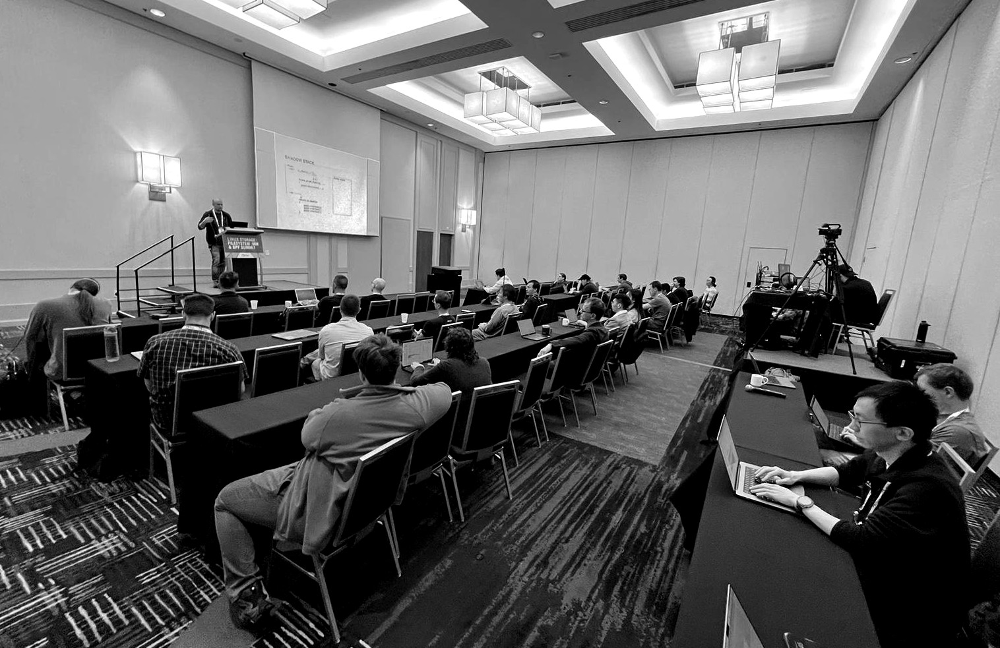
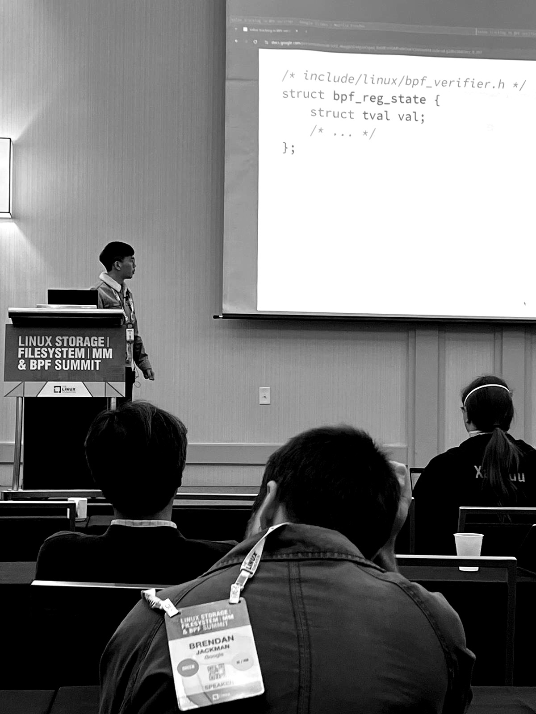

Linux Kernel Developers' bpfconf 2024
The conference is purposely kept small with focus on discussion rather than just presentation. Along with the LPC's BPF Track which is organized and run by the same community, the goal is to allow developers to meet face to face twice per year to exchange and discuss ongoing developments in the BPF ecosystem.
The 2024 bpfconf edition is a three-days conference which is part of the LSF/MM/BPF summit. It is therefore also open to all LSF/MM/BPF attendees.
Discussion Topics
The following discussion topics have been brought up at this year's bpfconf. In each slot below, there is a short discussion topic with a link to the corresponding slides in case slides have been used as a discussion starter.
LWN coverage of the BPF track from Daroc Alden can be found here. Raw (and incomplete) notes for some of the sessions have been collected by participants here.
Conference Info
| Location: | Salt Lake City, Utah, USA, part of LSF/MM/BPF |
| Committee: | Daniel Borkmann, Martin Lau |
| Date: | May 13 - May 15, 2024 |
| Schedule | |
| Attendees (by invitation only): | |
| Alexei Starovoitov (BPF maintainer, Meta) | |
| Daniel Borkmann (BPF maintainer, Isovalent) | |
| Andrii Nakryiko (BPF maintainer, Meta) | |
| Martin Lau (BPF maintainer, Meta) | |
| Aditi Ghag (Isovalent) | |
| Alan Jowett (Microsoft) | |
| Amery Hung (ByteDance) | |
| Anton Protopopov (Isovalent) | |
| Arnaldo Carvalho de Melo (Red Hat) | |
| Brendan Gregg (Intel) | |
| Daniel Mueller (Meta) | |
| Dan Kelley (Meta) | |
| Dave Thaler (Freelance) | |
| David Faust (Oracle) | |
| David Vernet (Meta) | |
| David Wei (Meta) | |
| Eduard Zingerman (Meta) | |
| Jiri Olsa (Isovalent) | |
| Joe Stringer (Isovalent) | |
| Jordan Rome (Meta) | |
| John Fastabend (Isovalent) | |
| Jose E. Marchesi (Oracle) | |
| KP Singh (Google) | |
| Kui-Feng Lee (Meta) | |
| Kumar Kartikeya Dwivedi (EPFL) | |
| Manu Bretelle (Meta) | |
| Maxwell Bland (Motorola) | |
| Mykola Lysenko (Meta) | |
| Namhyung Kim (Google) | |
| Neill Kapron (Google) | |
| Nikolay Yurin (Meta) | |
| Paul E. McKenney (Meta) | |
| Shung-Hsi Yu (SUSE) | |
| Song Liu (Meta) | |
| Stanislav Fomichev (Google) | |
| Vadim Fedorenko (Meta) | |
| Vineeth Pillai (Google) | |
| Yonghong Song (Meta) | |
| ... as well as other attendees from LSF/MM tracks |
Photos Attendees


Past Events
- bpfconf 2023
- bpfconf 2022
- bpfconf 2020/2021 (cancelled due to COVID restrictions)
- bpfconf 2019